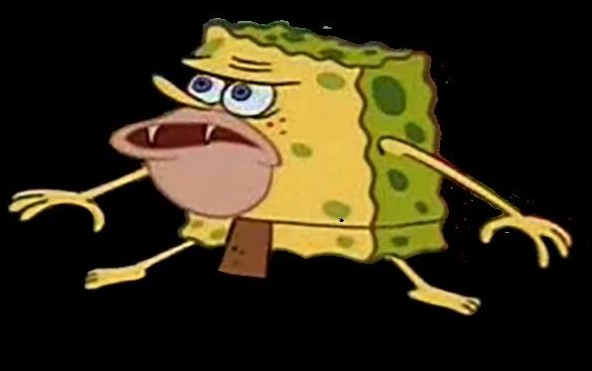

Saksham Chaturvedi
sakshamc2001@gmail.com | +91-9582064701
PROFILES
LinkedIn:
saksham-chaturvedi
Github:
saksham-chaturvedii
LeetCode:
sakshamc2001
Twitter:
sakshamm_
Youtube:
Saksham Chaturvedi
EDUCATION
JUIT, Solan
B.Tech. CSE | 2019-2023
CGPA: 8.8/10
SKILLS
Data Structures & Algorithms
C++
Frontend Web Development
HTML | CSS | JavaScript | React JS
| Material UI | Tailwind CSS | Bootstrap
Backend Web Development
Node JS | Express JS | Redis | PostgreSQL
PROJECTS
Frontend Projects
DuckDuckGone | 🦆🔫
Meme Baazi |👾
GTA-Memory Game | 🃏
Backend Projects
SCRUM System | 👨🎓
To-Do Application | 📝
PUBLICATION
Author of the book chapter - "
Mouse-less Cursor Control for Quadriplegic and Autistic patients using Artificial Intelligence
".
The chapter, written individually, was published for the book titled, "
Artificial Intelligence for Accurate Analysis and Detection of Autism Spectrum Disorder
" by
IGI-GLOBAL, USA
– An International Academic Publisher.
